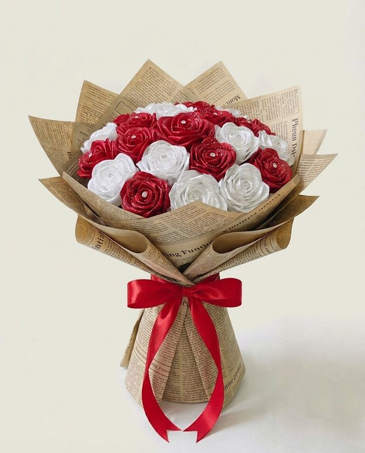

About Our Flowers
I create handmade bouquets using soft pipe cleaners and satin ribbon, materials that feel playful, nostalgic, and full of heart. Every stem is shaped by hand in my small studio, where slow moments and thoughtful details matter most.
These flowers are made to last, to be gifted, and to carry a little more intention to everyday moments.
Made with care, from my hands to yours.
Our Craft Process
Every bouquet is handmade through a mindful process that honours the materials and the person who receives it.
Shaping pipe cleaners
Creating ribbon roses
Arranging each bouquet

Wrapping with care
No rush, no shortcuts. Each flower is shaped with time and intention.
Every bouquet is wrapped beautifully, ready to bring joy the moment it arrives.
Designed to celebrate life's little moments and meaningful connections.